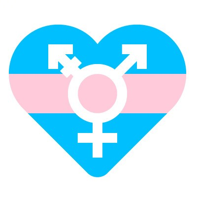

咨询手册第9篇 | 咨询中的性别认同议题
以下文章来源于跨儿心理 ，作者跨儿心理

跨儿心理
.
跨儿心理小组，是一个专注于跨儿（跨性别者与非性别常规者）心理健康的公益团队。小组致力于通过社群服务、社群培力、调查研究、公众教育与社会倡导等工作，改善跨儿的福祉，促进社会的性别多元平等。
理解个案求助动机——走钢索

性别认同的探索途径
撰稿： 7 0
编辑：欢喜
排版：健健
校对：四爺

原文公众号：